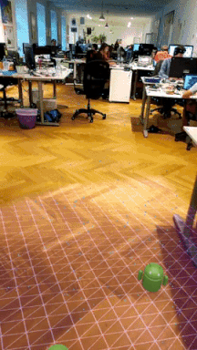

AUGMENTED REALITY
Getting
Started Augmented Reality with ARCore

We discused what augmented reality is in
our Vuforia article, you can read is in here(link to Vuforia article). In this article we will discuss ARCore and we will
develop a ARCore app using Unity3d.
Let’s talk about a little bit ARCore. ARCore
introduced in February 2018 as an Android’s world answer to ARKit offers an AR
functionality for several latest mobile devices running Android 7.0 and higher.
The new version of 1.5 introduces cloud anchor system allowing synchronisation
of surrounding world among users.

{ARCore logo}
Functions:
• Markless tracking
• SLAM Simultaneous Localization and Mapping
• Large areas mapping
• Light estimation
• Cloud Anchors colaborative AR experience image/object
Platforms:
• Android, Android NDK
• Unity
• Unreal
License:
• Free
Requirements
You'll need:
Hardware
•
An ARCore supported
phone
•
A USB cable to connect your phone to your
development machine
Software
•
Unity 2017.4.9f1
or later with Android
Build Support selected during installation
•
ARCore
SDK for Unity 1.5.0 or later
•
Android SDK 7.0 (API Level 24) or later,
installed using the SDK Manager in Android Studio
Steps for Unity (Image Recognition)
Development of a Ar
application with ARCore is easier than Vuforia.
- Open Unity and create a
new 3D project.
·
Now open Unity and import the package the you
downloaded. Select Assets > Import Package > Custom Package. Select the
package and click import. Or just double click on package. We will build in
Android Platform so we need to change the platform. Select File > Build
Settings (Ctrl + Shift + B). Select Android and click Switch Platform. You have
to installed the Android SDK, Unity Android Support (we downloaded it at the
begginning) and JDK (Java Development Kit) to take apk file. And last thing, we
have to change some setting at the Player Settings. In the Build Settings (Ctrl
+ Shift + B) window, click Player Settings.
o
Enable : Player Settings > XR Settings
> ARCore Supported
o
Change Minimum API level : Player Settings
> Other Settings > Minimum API Level (Android 7.0 or higher)
o
Set app’s identifier : Player Settings >
Other Settings > Package Name (example:
com.zuo.googleVR)
·
Go to Assets > GoogleARCore
> Examples > AugmentedImage > Scenes
and open AugmentedImage.
·
Now time to set images that
recognized by app.
- Select
the images in the Project window. Click mouse right. Create
augmentedImageDatabase
- Set the database to AugementedImageSession in
Hierarchy Window.
- Or forget this
step (selection images) just use the default database.
- Now time to
build and fun.
o
Select File > Build (or Build and Run).
Set your apk name and click build. Thats it. Congratulation you develop your
first ARCore Application. Now if you turn your camera to the image you will see
an frame around the image.
Steps for Unity (Plane Detection)
·
Open a new Unity Project and set player
setting as we did above.
·
Go to Assets > GoogleARCore
> Examples > HelloAR > Scenes
and open HelloAR.
·
And build as we did above
·
Run the app.
·
Move your phone around until ARCore starts
detecting and visualizing planes
·
Tap a plane to put an Andy Android object on
it.
